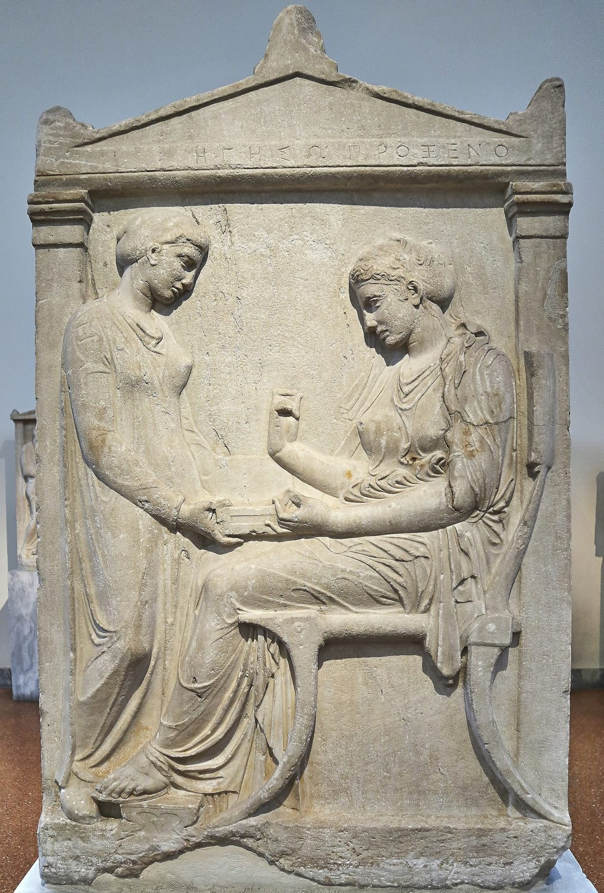
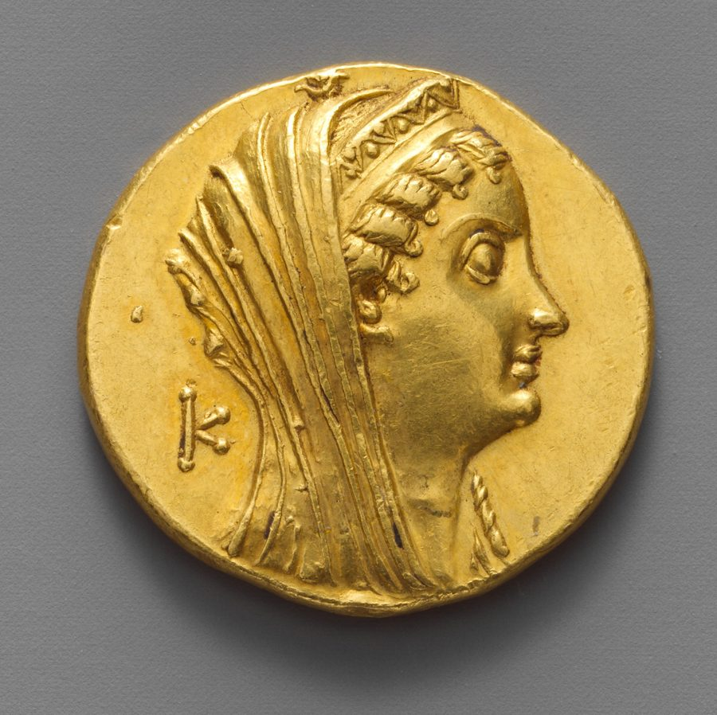
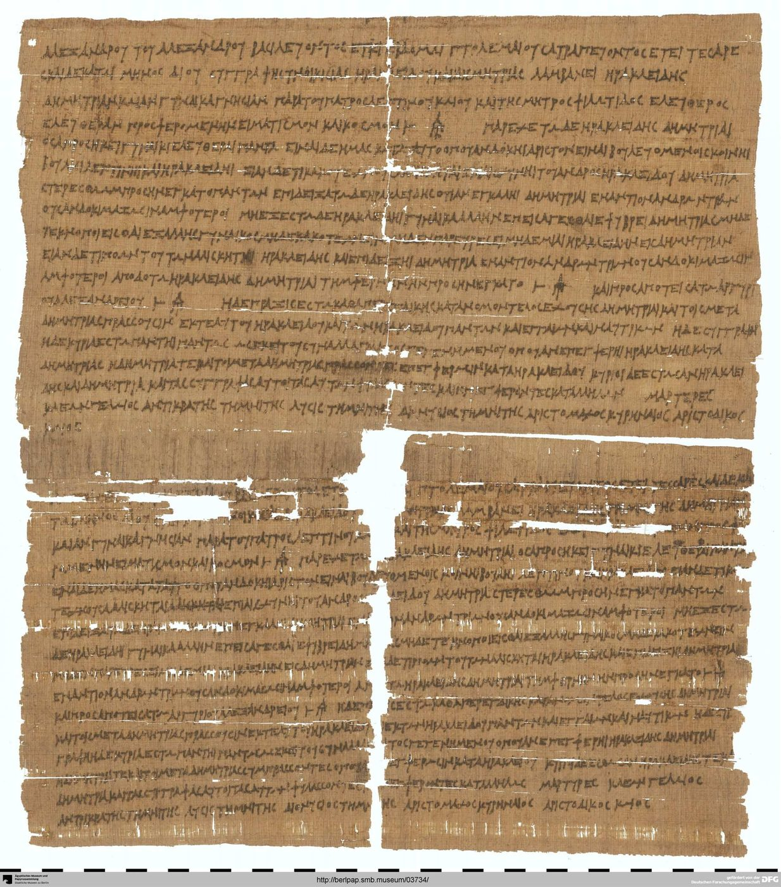
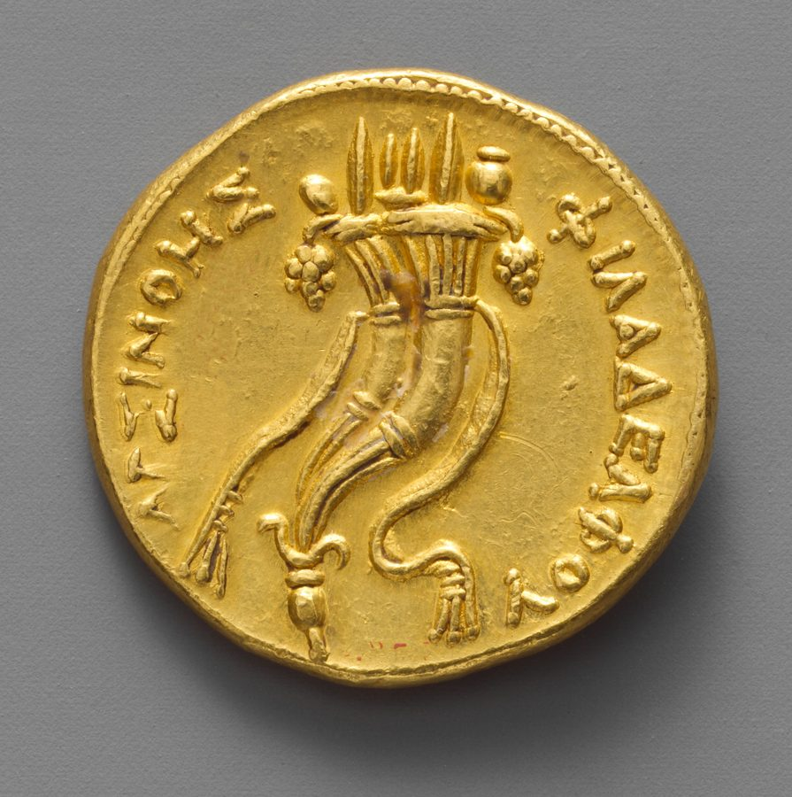
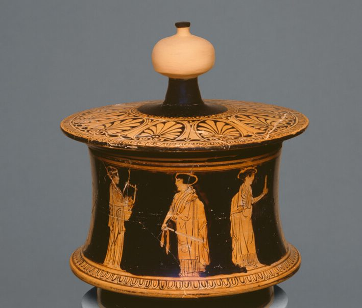

Unit 7 · Women in ancient Greece · Lesson 1
Greek women, c. 500–30 BCE
One society, two settings, and the problem of the sources: how can we study women who left so few words of their own?
Year 11 Ancient History · Present with → or space · Read on a phone with R


Images: George E. Koronaios (CC BY-SA 4.0) · The Met (CC0 1.0). Full details on the last slide.
Connect and revisit · 5 minutes · books closed · everyone writes · press K for the timer
Who made the sources, and whose words are missing?
From Unit 6: name one limitation of the Roman sources on enslaved people.
The Resolve changes the Judge’s degree. Rewrite the Resolve so that it keeps the same degree.
Judge: “Freed people’s tomb reliefs show how they wished to be seen to a large extent, because they or their families probably commissioned them.”
Resolve: “Ultimately, the reliefs show exactly how every freed person saw themselves.”
Owners and other free men wrote almost every text (Cato and Varro wrote handbooks for owners), so enslaved people’s own words rarely survive; they speak mainly through tombs set up by or for freed people.
Ultimately, the reliefs show, to a large extent, how freed people wished to be seen, because they or their families probably chose them.
The Judge said to a large extent; exactly and every raise the degree to entirely and drop the hedge probably. The Resolve may sharpen the Judge, but it must not change its degree.
Today the same problem returns for Greek women: who made the sources, for whom, and whose words are missing?
Learning intentions and success criteria · 2 minutes
Today’s goals
- understand the period, the two settings and the range of sources about Greek women
- write short answers whose length follows the verb and the marks
- explain why the unit studies one Greek society in two settings
- identify the main types of source and describe their limitations
- match a short answer’s length to its verb and marks
Syllabus outcomes: AH-11-05 analyses different types of sources for evidence to support a historical account or argument · AH-11-07 communicates historical understanding, applying historical knowledge, terms and concepts. Life Skills: AH-LS-08 uses sources to form conclusions about the past · AH-LS-11 communicates information about the past using historical terms and concepts.
Note-making · the routine for the whole course
How to structure your notes
questions and key terms, written after
short phrases, arrows (→ leads to), abbreviations (c. = about; BCE = Before the Common Era)
- 1A new unit, a new pageA cue column about a quarter of the page wide; title and date at the top; room for a summary at the bottom.
- 2Listen and look, then writeDon’t copy while a slide is being explained. Phrases, not sentences; a source for every claim.
- 3Write your own notes at each ✎ checkpointThen compare with the model notes, one row at a time. Add what you missed in a second colour.
- 4Write the cue questions afterwardsUse exam verbs: identify, describe, explain. To revise, cover your notes and answer the cues.
- 5Finish with a three-sentence summaryTwo checkpoints today: the period, the settings and a first source · the range and limits of the sources.
Key vocabulary · start the unit word wall
Words you will use all unit
| Verb (NESA) | Meaning · what the answer must do |
|---|---|
| Identify | ‘Recognise and name.’ — Name it precisely: a word, phrase or sentence. |
| Describe | ‘Provide characteristics and features.’ — Say what it was like, with specific features. |
| Writing term | Meaning |
| Length by marks | Department advice: 1–2 marks, a word to a sentence each; 3–4 marks, three to five sentences; 5–8 marks, a developed paragraph with a judgement. |
| Added today | Meaning |
| Hellenistic | The Greek world from Alexander’s death (323 BCE) to the end of the Ptolemies (30 BCE). |
| Ptolemies | The Macedonian Greek dynasty that ruled Egypt from Ptolemy I to Cleopatra VII. |
| Content terms | Meaning |
|---|---|
| Classical period | In Greek history, about 500 BCE to the death of Alexander in 323 BCE. |
| Kyrios | A woman’s legal guardian — her father, then her husband — who acted for her in law. |
| Dowry | Property a bride brought to her marriage; it had to be returned if her husband sent her away. |
| Stele (plural stelai) | An upright stone slab, often a grave marker with a relief and an inscription. |
| Papyrus | Writing material made from a reed; documents survive in Egypt’s dry climate. |
1 · One society, two settings · I do — the period on the timeline
One Greek society, two settings, about 500–30 BCE
- ASetting 1 · Classical Athens, about 500–323 BCEMost of the literary, legal and artistic evidence about Greek women: histories, speeches, plays, philosophy, grave reliefs and painted vases.
- BThe hinge · Alexander takes Egypt, 332/1 BCEAfter his death in 323 BCE, Ptolemy, one of his Macedonian generals, governed Egypt, and from 305 BCE ruled it as king.
- CSetting 2 · the Ptolemies’ Greek kingdom in Egypt, 323–30 BCEGreek-speaking settlers and their descendants, ruled by a Greek dynasty, ending with the death of Cleopatra VII in 30 BCE.
1 · One society, two settings · I do — why both settings are Greek · then cold call
Why are the women in Ptolemaic Egypt part of a Greek society?
- 1They were GreeksGreek-speaking settlers and their descendants, who made contracts under Greek law with a kyrios (guardian), worshipped Greek gods and were written about by Greek poets.
- 2Their documents say soPapyri name people by their Greek home cities: in P. Eleph. 1 the bride is Demetria, “Coan” (from the island of Kos).
- 3What Egypt addsWhat Athens lacks: papyri written for Greek women (marriage contracts, loans, petitions, wills), and Greek queens with cults and coins. So we can test continuity and change.
- 4A caution about the queensThe Ptolemaic queens were Macedonian Greeks, also presented to their Egyptian subjects as Egyptian queens and goddesses. Some of their evidence is Egyptian in form, such as the Canopus decree and the Dendera relief: we say so when we use it.
Greek women in Ptolemaic Egypt, never Egyptian women. The unit studies the society Greece; Egyptian women appear only as a point of comparison.
Why does this unit not simply study Athens?
Because Athens leaves gaps: almost no documents written for women survive from it. Ptolemaic Egypt adds contracts, petitions and queens’ coins for Greek women, so we can see what continued (the kyrios, the dowry) and what changed.
1 · One society, two settings · I do — think aloud on a source: who speaks, to whom, what it leaves out
A first source: advice to Athenian widows
On the other hand if I must say anything on the subject of female excellence to those of you who will now be in widowhood, it will be all comprised in this brief exhortation. Great will be your glory in not falling short of your natural character; and greatest will be hers who is least talked of among the men whether for good or for bad.
Thucydides, an Athenian general, writing during and after the war of 431–404 BCE, History of the Peloponnesian War 2.45.2: the speech at the public funeral for the war dead, winter 431/430 BCE · trans. R. Crawley (Dent, 1910), Perseus Digital Library
Cold call: is this good evidence of how Athenian widows actually lived?
Not on its own. It is an ideal for citizen widows, spoken by a man and written down by another man, so it shows an attitude, not how widows lived.
- 1Who speaks?Pericles, chosen by the city to give the speech, as Thucydides reports him. Thucydides says he made speakers say “what was in my opinion demanded of them by the various occasions”, while “adhering as closely as possible to the general sense of what they really said”.
- 2To whom?A crowd of citizens and visitors at the public burial, where “the female relatives are there to wail”. These lines are addressed to the new widows.
- 3What does it show?A man’s ideal of the citizen widow: the best woman is the one least talked about by men, “whether for good or for bad”.
- 4What does it leave out?What the widows thought or said; poorer, enslaved and foreign women; whether women lived by this ideal at all.
Notes checkpoint 1 of 2
The period, the two settings and a first source
2 · The range of sources · We do — in pairs, fill in the matrix in your booklet from these cards
Four kinds of source about Greek women
… greatest will be hers who is least talked of among the men whether for good or for bad.
Thucydides, History 2.45.2: Pericles’s funeral speech, Athens, winter 431/430 BCE, as Thucydides reports it · trans. Crawley
Written by an Athenian man, for readers of his history.
The stele of Hegeso, marble, Athens (the Kerameikos cemetery), about 410–400 BCE
A seated woman looks at an object in her raised hand, probably jewellery once painted on, while a standing attendant holds an open box. Above: “Hegeso, daughter of Proxenos”.

P. Eleph. 1, a marriage contract, Elephantine, Egypt, 311/310 BCE · trans. Hunt and Edgar
Heracleides takes as his lawful wife Demetria, Coan, both being freeborn, from her father Leptines, Coan, and her mother Philotis …

Gold coin of Arsinoe II, 2.8 cm across, struck under Ptolemy II after her death, about 261–246 BCE
Its Greek words: ‘of Arsinoe Philadelphos’ (‘sibling-loving’), the queen’s title in her cult.

The full range, all unit: men’s texts (history, philosophy, drama, law-court speeches) · inscriptions and grave stelai · painted vases · papyri (almost all from Egypt, kept by the dry climate) · queens’ coins and cult objects.
Images: George E. Koronaios (CC BY-SA 4.0) · SMB, Ägyptisches Museum und Papyrussammlung (CC BY-SA 4.0) · The Met (CC0 1.0) · Art Institute of Chicago (CC0 1.0). Full details on the last slide.
2 · The range of sources · We do — check your matrix by cold call · then: whose own words?
Who made it, for whom, and what does it leave out?
| Type | Made by | For whom | Shows | Leaves out |
|---|---|---|---|---|
| 1 · A history | an Athenian man (Thucydides), reporting another (Pericles) | his readers; the speech, a funeral crowd | a man’s ideal of the citizen widow: silence | what women thought; most women’s lives |
| 2 · A grave stele | a sculptor, for Hegeso’s family | her family; people passing the cemetery | how a wealthy family wished her to be remembered: seated, at home, with jewellery | her own words; her daily life; poorer women |
| 3 · A papyrus document | a writer for the two families; six men as witnesses | the couple: each could keep a copy and use it in a dispute | a woman’s legal and economic life: her dowry (1000 drachmas); rules for both partners | what Demetria wanted; she is given by her father and mother; one couple only |
| 4 · A queen’s coin | the royal mint of Ptolemy II, her brother and husband | everyone who handled the king’s gold coins | the queen honoured in a cult after her death | her own words and acts; ordinary women |
Cold call: which type gives us women’s own words?
None of these four, directly: men made or wrote them, for families, readers, a married couple or the king’s subjects. Women’s own words barely survive from Classical Athens, and the letters under the name of Theano, an early Pythagorean woman, were probably written centuries later. Papyri come closest: in Lesson 13 you will read petitions to the king made in Greek women’s own names.
Notes checkpoint 2 of 2
The range of sources, and their limits
3 · You do · Writing focus · 7 minutes · I do → We do → apply
Writing focus: the verb and the marks set the length
Identify: ‘Recognise and name.’ · Describe: ‘Provide characteristics and features.’ NESA, Glossary of key words
| Marks | Length · department advice, not a NESA rule |
|---|---|
| 1–2 marks | a word to a sentence each |
| 3–4 marks | three to five sentences |
| 5–8 marks | a developed paragraph with a judgement |
Identify the speaker in Thucydides 2.45.2. (1 mark) Worked examples · written for this lesson
Pericles, in his funeral speech as Thucydides reports it.
Describe the Hegeso stele. (3 marks)
The Hegeso stele is a marble grave relief from Athens of about 410–400 BCE. It shows a seated woman looking at an object in her raised hand, probably jewellery that was once painted, while a standing attendant holds an open box. An inscription above the figures names her: Hegeso, daughter of Proxenos.
Read the marks first: 2 marks, two short answers; 4 marks, three to five sentences. Begin the describe answer with “One main limitation of the written sources is that …” Your Writing toolkit (booklet pages 3–4): the directive verbs.
How long should a 3-mark outline be, and why? Vote A–D on “3, 2, 1, show”.
- AA word or a phrase, because outline asks you only to name it.
- BThree to five sentences, because outline asks for the main features, in brief.
- CA developed paragraph, because outline asks for every detail and a judgement.
- DThree to five sentences, because outline asks you to explain the causes.
NESA: outline, ‘Sketch in general terms; indicate the main features of.’ Three marks: about three main features, in brief (department advice: three to five sentences). A is an identify answer’s length. C is too long, and outline asks for no judgement. D is the right length for the wrong verb: causes belong to explain.
3 · You do · 19 minutes in all · deconstruct both questions first · press K for the timer
Two short answers: deconstruct them first
1 · Identify two types of source about women in Classical Athens. 2 marks
2 · Describe the main limitations of the written sources about Greek women. 4 marks
Deconstruct each: what does each question ask you to do?
| Step | Question 1 · 2 marks | Question 2 · 4 marks |
|---|---|---|
| Verb | identify: recognise and name | describe: give characteristics and features |
| Topic | types of source about women | the limitations of the written sources |
| Limits | Classical Athens only; two types | written sources only (texts, inscriptions, papyri); Greek women in both settings; the main limitations |
| Do | name two types precisely, a word to a sentence each; no explanation | three to five sentences, each a limitation with an example; no judgement needed |
Check first: which answer needs more sentences, and why?
Question 2: it has 4 marks and asks for features (describe), so three to five sentences. Question 1 has 2 marks and asks only for names: two answers, a word to a sentence each.
3 · You do · writing 13 minutes · then check your length · press K for the timer
Write both answers, each the length its marks ask for
1 · Identify two types of source about women in Classical Athens. 2 marks
2 · Describe the main limitations of the written sources about Greek women. 4 marks
- Question 1: two types, each named precisely, a word to a sentence each.
- Question 2: start with the frame “One main limitation of the written sources is that …” Give each limitation an example from today’s sources.
- Count your sentences against the marks: three to five for Question 2.
Propose why so few women’s own words survive from Classical Athens, and what evidence could change that picture.
Use your matrix and Notes 2. Word bank:
Frames: “One main limitation … is that …” · “A second limitation is that …, such as …”
3 · You do · after you write · compare yours with a model
Model answers: two short answers, two lengths
Grave stelai, such as the stele of Hegeso. Histories written by men, such as Thucydides’s.
One main limitation of the written sources about Greek women is that almost all were written by men, and much of what they say was meant for men: the advice to Athenian widows in Thucydides 2.45.2 is Pericles’s speech as Thucydides reports it. A second limitation is that they describe mostly elite women, chiefly Athenian citizens, so they say little about poorer, enslaved or foreign women. Many also present ideals of how women should behave rather than how women lived, such as the widow who is ‘least talked of among the men’. Finally, few women’s own words survive: the letters under Theano’s name were probably written centuries later, and even the papyri written for Greek women, which come closest, survive almost only from Egypt.
Finish your notes If time · or at home
Summary: three sentences
- What period and which two settings does this unit study, and why are both Greek?
- What kinds of source survive about Greek women?
- What are the main limits of these sources?
This unit studies Greek women from about 500 to 30 BCE in two settings of one Greek society: Classical Athens, and the Ptolemies’ Greek kingdom in Egypt, where Greek settlers lived under Greek law and worshipped Greek gods. The sources include men’s texts, inscriptions and grave stelai, painted vases, papyri from Egypt, and queens’ coins and cult objects. Almost all were made by men, and many for men; most are about elite Athenians, so they show ideals more than daily life, and few women’s own words survive.
Check for understanding · hinge question · hold up your A, B, C or D card on “3, 2, 1, show”
Which source type survives from Ptolemaic Egypt but not from Athens?
- AGrave stelai
- BPapyrus documents
- CLaw-court speeches
- DPainted vases
Nearly all papyri are found in Egypt’s dry desert, where papyrus could survive. From Ptolemaic Egypt they include marriage contracts, loans, petitions and wills written for Greek women, such as P. Eleph. 1. A is wrong: grave stelai survive from Athens, such as Hegeso’s. C is wrong: law-court speeches survive from Classical Athens, and you will read some in Lessons 2–4. D is wrong: painted vases survive from Athens too.
Exit ticket · 4 minutes · before you leave
Finish the sentence
“The sources about Greek women are limited because …”
Almost all were made by men, and many for men; they are mostly about elite Athenians; and they show ideals more than daily life. A strong answer gives an example, such as Pericles’s ideal of the silent widow.
Then check yourself against today’s three “I can” statements. Next lesson: who speaks for Athenian women? Reading the sources closely.
Practice and review · 1 of 4 · true, false, justify
True or false? Justify your answer
- 1This unit studies Egyptian women in Ptolemaic Egypt. False — it studies Greek women there, who lived under Greek law with a kyrios and worshipped Greek gods; Egyptian women appear only as a comparison.
- 2Thucydides 2.45.2 gives us the words of an Athenian widow. False — it gives Pericles’s words to the widows, as Thucydides reports them.
- 3The stele of Hegeso was found in the Kerameikos, a cemetery of Athens. True — found in 1870; it is now in the National Archaeological Museum, Athens (3624).
- 4Nearly all surviving papyri come from Egypt. True — nearly all are found in the Egyptian desert, where the climate was dry enough to preserve them, so documents written for Greek women survive almost only from there.
- 5The Met’s gold coin of Arsinoe II was struck while she was alive. False — it dates from about 261–246 BCE; she died in 270 or 268 BCE, so it honours her after her death.
- 6The letters under Theano’s name are good evidence of Classical Athenian women’s own words. False — they were probably written centuries later, under the name of an early Pythagorean woman, a follower of Pythagoras in southern Italy rather than an Athenian.
Practice and review · 2 of 4 · writing · deconstruct each question first · read the marks
Three verbs, three lengths
Identify who gives Demetria in marriage in P. Eleph. 1. (1 mark)
Her father Leptines and her mother Philotis.
Describe the Met’s gold coin of Arsinoe II. (3 marks)
The coin is a gold octadrachm, 2.8 cm across, now in the Metropolitan Museum of Art in New York. One side shows Arsinoe II’s veiled head in profile; the other shows two horns of plenty and the Greek words for ‘of Arsinoe Philadelphos’. It was struck after her death, in about 261–246 BCE.
Outline the period this unit studies. (3 marks)
The unit begins with Classical Athens, from about 500 BCE to Alexander’s death in 323 BCE. Alexander took Egypt in 332/1 BCE, and after his death the Ptolemies, a Macedonian Greek dynasty, ruled it as a Greek kingdom. The period ends in 30 BCE with the death of Cleopatra VII, the last of the Ptolemies.
Practice and review · 3 of 4 · extension · propose
Why do so few women’s own words survive from Classical Athens?
Propose why so few women’s own words survive from Classical Athens, and what evidence could change that picture.
Propose: ‘Put forward (for example a point of view, idea, argument, suggestion) for consideration or action.’ NESA, Glossary of key words
Shape: claim → support → limit (and what would test it).
One possible explanation is that the writing that was copied and kept from Classical Athens, such as histories, speeches and plays, was almost all written by men, so women’s words had little chance of reaching us. Today’s sources support this: the best-known advice to Athenian widows is a man’s, as another man reports it, and even writings that carry a woman’s name, such as the letters under the name of Theano, an early Pythagorean woman, were probably written centuries later. Yet this cannot be the whole explanation, because survival matters too: nearly all papyri come from Egypt’s dry desert, so everyday writing on papyrus from Athens, by women or by men, has almost all been lost. A new find from Classical Greece of writing in a woman’s own name would test this proposal.
Practice and review · 4 of 4 · cover your notes and answer from memory
Quick checks
- What period and which two settings does this unit study? About 500–30 BCE: Classical Athens (about 500–323 BCE) and the Ptolemies’ Greek kingdom in Egypt (323–30 BCE).
- Why do the women studied in Ptolemaic Egypt count as Greeks? They were Greek-speaking settlers and their descendants who made contracts under Greek law with a kyrios, worshipped Greek gods and named their Greek home cities (Demetria, “Coan”).
- Who speaks in Thucydides 2.45.2, to whom, and what ideal does it give? Pericles, as Thucydides reports him, to the widows at a public funeral in 431/430 BCE: the best woman is least talked of among men, for good or bad.
- Name four types of source about Greek women. Any four: men’s texts (history, philosophy, drama, law-court speeches); inscriptions and grave stelai; painted vases; papyri; queens’ coins and cult objects.
- What do papyri add, and why do they survive almost only from Egypt? Documents written for Greek women, such as marriage contracts, loans, petitions and wills; Egypt’s dry desert preserved papyrus, and very little survives anywhere else.
- What do identify and describe ask for, and how long is a 4-mark answer? Identify: recognise and name. Describe: characteristics and features. A 4-mark answer: three to five sentences (department advice).
Sources and credits
Where everything comes from
Thucydides, History of the Peloponnesian War 2.34 and 2.45.2: trans. R. Crawley (Dent, 1910; public domain), Perseus Digital Library (CC BY-SA 3.0 US). Thucydides 1.22: trans. R. Crawley (1874; public domain), Internet Classics Archive, as in Unit 1, Lesson 4. P. Eleph. 1: trans. A. S. Hunt and C. C. Edgar, Select Papyri I (Loeb, 1932), no. 1 (public domain in Australia), attalus.org.
Facts: National Archaeological Museum, Athens, gallery label for 3624; Museum of Classical Archaeology, University of Cambridge, cast record, grave stele of Hegeso; The Metropolitan Museum of Art, 30.115.23; Staatliche Museen zu Berlin, Ägyptisches Museum und Papyrussammlung, P 13500; Leiden Papyrological Institute, “What is papyrology?”; C. Huffman, “Pythagoreanism”, Stanford Encyclopedia of Philosophy. Timeline drawn for this lesson. The NESA Glossary of key words (definitions quoted word for word).
Outcomes and content: NSW Education Standards Authority (NESA), Ancient History 11–12 Syllabus (2024). © NESA.
- Grave stele of Hegeso, Athens, about 410–400 BCE (National Archaeological Museum, Athens, 3624) · Photo: George E. Koronaios · CC BY-SA 4.0 · source
- Gold octadrachm with the head of Arsinoe II, about 261–246 BCE (Metropolitan Museum of Art, 30.115.23) · Photo: The Metropolitan Museum of Art · CC0 1.0 · source
- P. Eleph. 1, the marriage contract of Heracleides and Demetria, Elephantine, 311/310 BCE (Berlin, P 13500) · Photo: Staatliche Museen zu Berlin, Ägyptisches Museum und Papyrussammlung · CC BY-SA 4.0 · source
- Gold octadrachm of Arsinoe II, the other side: two horns of plenty and her name (Metropolitan Museum of Art, 30.115.23) · Photo: The Metropolitan Museum of Art · CC0 1.0 · source
- Red-figure pyxis with women, Athens, 430–420 BCE (Art Institute of Chicago, 1892.126a-b) · Photo: Art Institute of Chicago · CC0 1.0 · source
_at_the_National_Archaeological_Museum_on_3_April_2018.jpg){kind=link}
.jpg){kind=link}
All images are public domain or openly licensed, and were resized or cropped for the web. Each is shared under the licence shown.